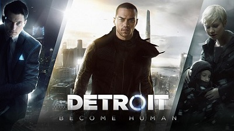
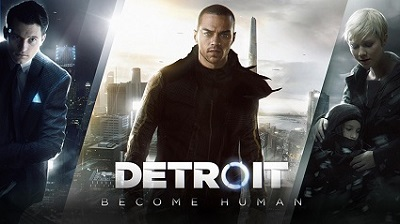
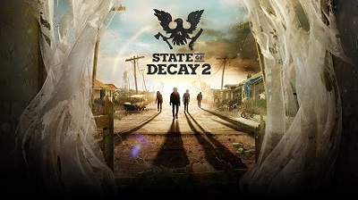
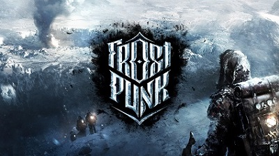
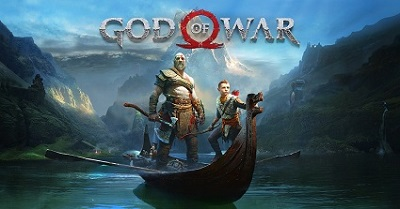

RESEÑA-Become Human

Decir que Detroit: Become Human es uno de los videojuegos más ambiciosos de toda la historia no es una...Leer más

Decir que Detroit: Become Human es uno de los videojuegos más ambiciosos de toda la historia no es una...Leer más

Para muchos, los juegos de Zombies ya murieron, pero no pueden estar más alejados de la realidad, este personaje...Leer más

Los juegos en los que los desarrolladores encuentran buena idea el que nosotros nos pongamos a gestionar recursos y...Leer más

Después de un letargo notable y de señas que apuntaban a que la franquicia ya estaba dando sus últimos...
Leer más
Sin duda, una de las cosas que se podría desprender a la hora de hablar de la franquicia de...Leer más